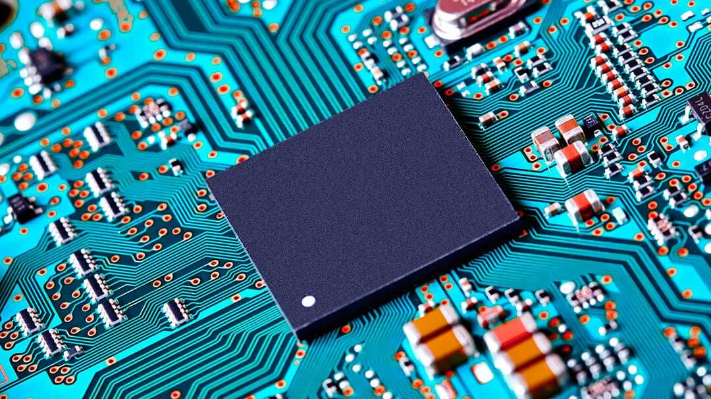

La Electrónica: Transformando Nuestro Mundo con Innovación y Avances Tecnológicos

La electrónica ha tenido un impacto revolucionario en nuestra sociedad, transformando la forma en que vivimos, trabajamos y nos comunicamos. Desde los dispositivos portátiles que llevamos en nuestros bolsillos hasta los sistemas complejos que impulsan nuestras industrias, la electrónica ha allanado el camino hacia un futuro tecnológico emocionante. En el corazón de la electrónica se encuentran los componentes electrónicos, que son los bloques de construcción fundamentales de cualquier dispositivo electrónico. Desde los simples resistores y capacitores hasta los sofisticados microprocesadores y circuitos integrados, estos componentes permiten la transmisión, el procesamiento y el almacenamiento de información de manera eficiente y precisa. La electrónica abarca una amplia gama de aplicaciones y sectores. En el ámbito de la comunicación, los avances en electrónica han permitido la conectividad global sin precedentes. Desde los teléfonos inteligentes que nos mantienen conectados con el mundo hasta las redes de comunicación de alta velocidad que facilitan la transferencia de datos, la electrónica ha desempeñado un papel fundamental en nuestra era digital. Además, la electrónica ha revolucionado la industria de la salud, permitiendo avances en el diagnóstico y tratamiento de enfermedades. Desde los equipos médicos de alta tecnología hasta los dispositivos de monitoreo personal, la electrónica ha mejorado la precisión, la eficiencia y la accesibilidad de la atención médica, salvando vidas y mejorando la calidad de vida de las personas.
La electrónica también ha transformado el mundo del entretenimiento y el ocio. Los avances en pantallas de alta definición, sistemas de sonido envolvente y dispositivos de realidad virtual han llevado las experiencias audiovisuales a un nuevo nivel. Los videojuegos, las películas y la música se han vuelto más inmersivos y emocionantes gracias a la electrónica. Además, la electrónica ha jugado un papel crucial en la protección del medio ambiente y la sostenibilidad. Los sistemas de energía renovable, como la energía solar y eólica, se basan en tecnologías electrónicas para capturar y utilizar de manera eficiente la energía limpia. Los sensores y dispositivos electrónicos también se utilizan en la monitorización ambiental y el control de la contaminación, ayudando a preservar nuestros recursos naturales. En resumen, la electrónica ha revolucionado nuestra sociedad y ha impulsado avances tecnológicos en múltiples campos. Desde la comunicación y la atención médica hasta el entretenimiento y la sostenibilidad, la electrónica continúa desempeñando un papel fundamental en la mejora de nuestra calidad de vida. A medida que avanzamos hacia un futuro cada vez más conectado, la electrónica seguirá siendo la fuerza motriz detrás de la innovación y el progreso tecnológico.